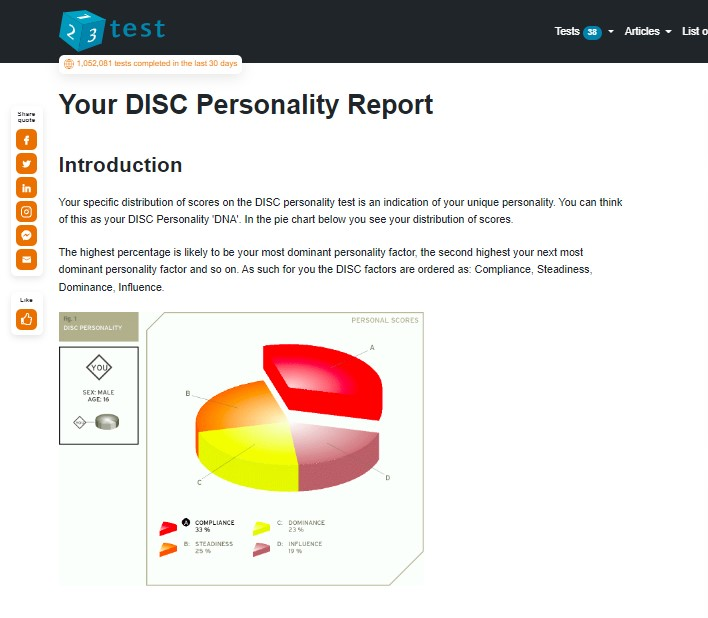
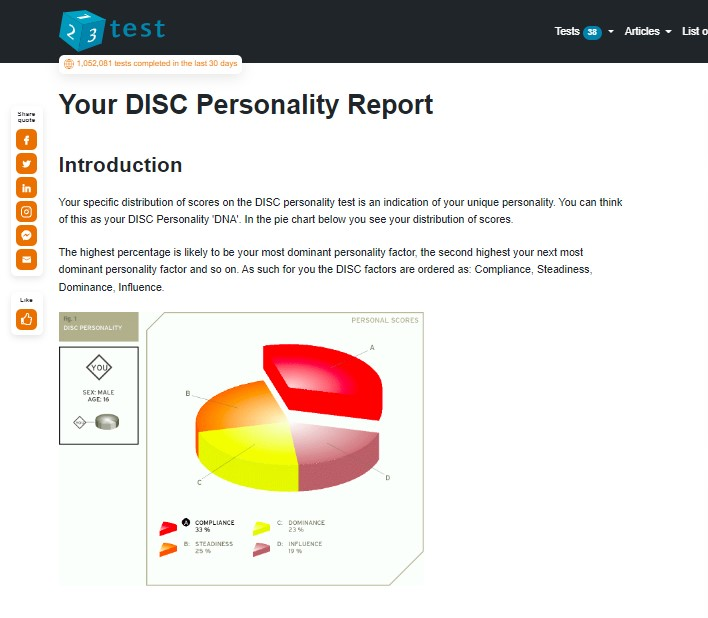

Assignment 1
Fawaz Jeneby
Student Information
I am a first year uni student. I was born in Australia and am of Asian and African ethnicity.
The eldest of six children and one of twins, I was homeschooled through high school.
In between looking after my younger sibs and uni, I enjoy maths, music (I sing and play the piano)
and mobile gaming.
Interest in IT
I started to get interested in IT when I was 14. I was doing an online career test and trying to see what job suits me
through Seek. The first fifteen answers were all IT-related and the salary prospect was high. I tried to learn a few
programming languages through Khan Academy and I found it fun so when I applied to go to University, I
chose to go for a bachelor of IT. My field of interest is in data analysis (because of its mathematical nature) and game development.
The reason I chose RMIT was because it has a strong reputation in IT. I am acquainted with a number of RMIT graduates who are now very successful IT professionals. I believe that this university offers both the theoretical and practical resources which enable graduates to be successful in acquiring jobs in their field and being successful in it. My dad is an RMIT alumnus and is now a successful aerospace engineer with RAAF. The bonus is RMIT is the only local uni that accepts people my age
(I am 16).
What I expect to learn from this course is the basics of IT such as learning foundational programs, how they each work, and how they are applied. I expect to learn how to code efficiently, and one day, try doing it myself to see if I can create something on my own. My goal is to acquire a strong IT foundation through the university, which will allow me to comprehend and use the programs learned confidently once completed.
The Ideal Job I would like to go for in an IT career is Data Analysis. They get paid at least $100,000 a
year.
A general Data analyst gathers and analyses business data whether it is finances, patients, sales. The
applications are wide in scope.
The Specific field I was keen on exploring is Quants. I find this field appealing because I am an avid
mathematician. Quants involve mathematical modelling through IT applications through coding and
Algorithms. It also involves researching on historical data so that in the future, the business can get
more profit.
Personal Profile
>
I analysed myself through online tests and these are the results:
The results from a Myers-Briggs test through 16 Personalities, it concluded that I am an entertainer.
This means, according to them, that I will be good with doing group projects because I can express my
excitement, I am also good at being observant and down-to-earth. Also it says that I value emotional
expressions and sensitivity, I am self-confident and I can adapt to opportunities.
 The results from the online test by Education Planner concluded that I am an Auditory/tactile learner.
This means, according to them, that I learn easier through Listening to my teammates and to do my
part straight after. I can remember things through listening and remember the project parts have been
done rather than it being done in the process.

The results from a DISC test through 123test, it concluded that I am rounded as a compliant person.
This means, according to them, that I am conscientious, diligent and pay attention to details.This can
help the team with editing the errors in programs or finding out what is missing or should be added in
the project.
It also gave career options through the answers i put in and it gave me a Technical Writer, a Software
Engineer, Mechanical Engineer or an Architect.
The results from the online test by Education Planner concluded that I am an Auditory/tactile learner.
This means, according to them, that I learn easier through Listening to my teammates and to do my
part straight after. I can remember things through listening and remember the project parts have been
done rather than it being done in the process.

The results from a DISC test through 123test, it concluded that I am rounded as a compliant person.
This means, according to them, that I am conscientious, diligent and pay attention to details.This can
help the team with editing the errors in programs or finding out what is missing or should be added in
the project.
It also gave career options through the answers i put in and it gave me a Technical Writer, a Software
Engineer, Mechanical Engineer or an Architect.

Project Idea:
Overview
The Project I will be making will be an escape room game about someone analysing the situation
in the room and they are trying to get the details of what happened to figure out the puzzle.
This will be a simple 5-10 minute game and it will be a fixed game (a game where if you repeat
the level, it will reset). The aim of the project is trying to make other people look in a different way and
analyse their surroundings. By doing this, this can help them in the real world when they are faced with
different sorts of problems, analysing a problem, gather what they know and give a solution.
Motivation
What made me think of making this game as a project is the fact that the only thing that I may know
How to code is a game. People like games because it’s fun and people learn through doing things so I
I want to make a game that can teach as well as making it fun to play. This game will be useful for building up the skill of analysing situations and talking notes of what
happened, what is happening and what will happen. This will help with looking at real life situations
and being aware or analysing the situation so that you are more organised and prepared for the future.
Description
The game will be a 2D first-person PC game.
The graphics and colours of this game will just be simple (no HD special type) since it is addressed to
Anyone from a student to an adult.
This game will need a starting page, a playing page, a pause page, a completed page and an exit
page.
The starting page will include the title of the project and a play button.
The play page will be the game itself. The player is in a room and trying to find a way out using the
things around him there will be instructions as the player interacts with objects/puzzles. There will be 5 puzzles and each time the player gets a puzzle right, they will get a
clues and if the player completes 1, they will get a clue that will help them try to escape. The player will
i also have a notebook to store the clues. Once they have all 5 clues, they will know how to escape.
When the player escapes, they win.
The Puzzles will be mathematical and memory based. The first one will be simple arithmetic. The second will
be about colour order in which the answer is around the room. The third will be about getting a code
from the first 2 puzzles in order to get a key to unlock the clue. The fourth is about what items are in
which place, this will have a timer so that the player needs to memorise their surroundings and write
it down. The last puzzle is all the puzzles mixed up and what the similarities between them are.
The answer of the final puzzle will be the clue to escape the room. If the player tries to close the
puzzle and open it up again, the puzzle will reset so that the player can’t really cheat the puzzles.
Extras:
Add more levels to the game to make it more interesting. Add sound FX and music to the game.
Add a timer to see how fast the person completes the level.
Tools and Technologies
Describe the software, hardware and/or other equipment needed. Include any relevant open source
tools as appropriate.
The game’s hardware can be anything that can access a browser. The game’s utility software will be
Unity. Unity is good for games whether 2D or 3D and most people use it for short and simple games.
The program they use is easy to follow and put down and it can adapt to other incoming sources.
Skills Required
The software is free and simple and I just need to download it.
There is the coding and designing of the game.
The skill needed to make this game may seem only a bit but the time that it will take to do it
will be huge.
This game will be more focused on the mechanics then the aesthetics since this will be a small game.
The mechanics will include the objects, the puzzles and the player’s movement.
The aesthetics will be mainly focused on the puzzles so that the players won’t be confused.
I need to allocate time to focus on the project while focusing on the modules.
Outcome
If the game is successful in running, i know that I successfully made a game but what I want people to
Get something out of this game by thinking outside of the box and using their brains to solve things
rather than just making them get a prize and get nothing out of it. There’s no success if the player
gets nothing out of it because as I’m trying to give the skills of a data analyst, by doing the basics in a
fun way can interest people whether young or old. This project can be more influential to others than
me if it’s a huge success.
>
>